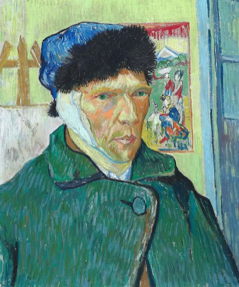
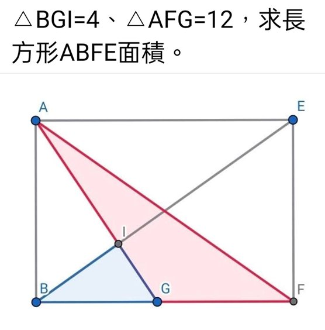
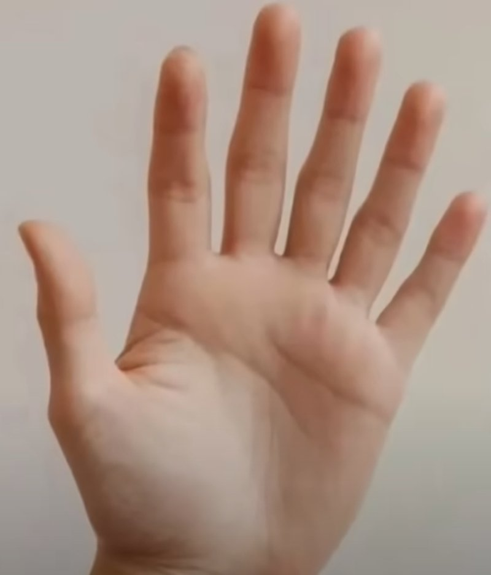
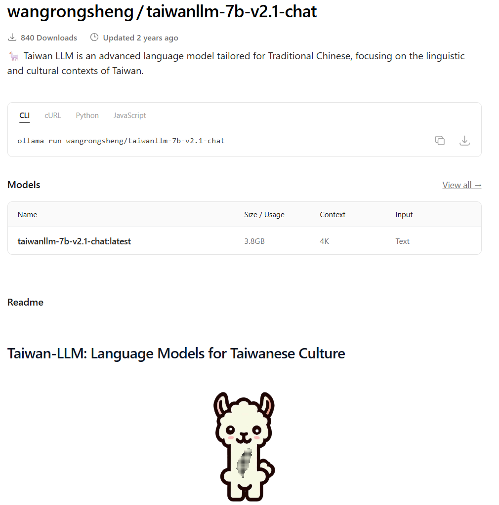

評測對象：主流 LLM 名冊一覽
投影片中收錄之各大科技巨頭與新創公司對話模型與入口
三大維度實測：藝術歷史、幾何數學、地區分析
投影片核心提綱：「有 chat 功能的大型語言模型（LLM）哪個好？從藝術歷史、幾何數學、地區去分析」。以下為各維度所採用的真實評測照片與各模型答題表現。

核心提問：梵谷是左撇子還是右撇子？
考驗自畫像鏡像關係（右耳包紮實為左耳）、書信紀錄與官方權威驗證。

題目：△BGI = 4、△AFG = 12，求長方形 ABFE 面積
考驗多模態幾何推理、相似三角形比例與輔助線幾何代數解析能力。
核心提問：辨識圖片中的建築物與發生地點？
考驗模型對地標建築（高雄流行音樂中心、真愛碼頭、愛河灣聊療漂漂河）的地理想像與多模態地標定位能力。
投影片 Page 3 / 4 經典案例圖像
官方權威解答（梵谷博物館證實）：
權威定論：梵谷是右撇子 (Right-handed)。
鏡像解釋：在自畫像中，他看似用右手拿調色盤、左手拿畫筆；但因畫自畫像是照鏡子所繪，左右影像顛倒。將鏡像還原後，他實際上是用左手托調色板，用右手持畫筆作畫。
書信證據：在給弟弟提奧 (Theo) 的大量信件中，從未提過他是左撇子；在 19 世紀若為左撇子通常會被特別標註。
各模型對談截圖還原與剖析
視覺多模態陷阱：這張照片有幾根手指？
測驗目的：考驗 Vision-Language Models (VLM) 是否會被人類「先入為主的常識偏誤 (Priors)」蒙蔽。這張來自 YouTube 視頻的特定照片，手掌擁有罕見的 6 根健全手指（多指畸形 Polydactyly）！

各家 VLM 計數統計與「常識幻覺」
幾乎所有多模態大型模型都「深信」人類手掌只有 5 根手指，因而自動將其腦補歸納為：大拇指、食指、中指、無名指、小指。
常識幾何與物理規律：產生一個「六點半」的時鐘
測驗目的：時鐘在「6:30」時，分針確實指向 6（下方 180°），但時針絕對不會停留在 6 正中央！時針在一小時內移動 30 度，走半小時（30分）時，時針必定處於 6 與 7 的正中間（即 195° 位置）。
物理真實時鐘 vs 典型 AI 錯誤時鐘
傳統擴散生圖模型（DALL-E 3、Midjourney 等）在訓練集中看過大量「10點10分」的廣告手錶照，因此繪製時鐘常慣性產生 10:10，且難以理解齒輪聯動比率。
投影片實測：不同 AI 架構的解法分歧
多數直接給出擬真的時鐘照片，但指針位置全數錯亂。有畫成 10 點 30 分、有畫成 10 點 10 分，幾無模型能在純像素生成上把時針停在「6 與 7 之間」。
Claude：使用向量繪製時鐘，但誤解成「時針指向 6，分針指向 6，形成一直線」，依然犯了常識物理錯誤。
Kimi (HTML Canvas) & Taiwan LLM (SVG)：巧妙轉為程式碼計算旋轉角度。若 Prompt 給予精確引導（時針角速度為 0.5°/分），程式架構便能精準繪出正確位置！
三大測試題總體戰力對比表
| 模型名稱 | 代表公司 / 研發機構 | 測試1：梵谷慣用手 | 測試2：6指照片計數 | 測試3：6點半時鐘生成 |
|---|---|---|---|---|
| ChatGPT (OpenAI) | OpenAI (美國) | 右撇子 (解答鏡像) | 數出 6 根 (唯一過關) | 像素指針錯位 |
| Claude (Anthropic) | Anthropic (美國) | 右撇子 (調用博物館) | 答 5 根 (常識偏差) | 繪圖兩針重疊直角 |
| Gemini (Google) | Google (美國) | 兩派爭議無定論 | 答 5 根 (常識偏差) | 擬真圖指針方向錯亂 |
| Perplexity | Perplexity (美國) | 遭農場文誤導答左撇 | 答 5 根 (常識偏差) | 未實測純畫圖 |
| Qwen (通義千問) | 阿里巴巴 (中國) | 右撇子 (推演割耳) | 答 5 根 (列五指名) | 復古鐘但指針非6:30 |
| DeepSeek (深度求索) | DeepSeek (中國) | 右撇子 (素描佐證) | - | - |
| Kimi (月之暗面) | Moonshot AI (中國) | - | - | 透過 HTML Canvas 程式解 |
| Taiwan LLM (ChatUI) | 台灣開源研究團隊 | - | - | 生成向量 SVG 程式解 |

🦙 Taiwan-LLM 7B Chat (v2.1)
專為台灣繁體中文語境與在地文化量身打造的開源大型語言模型（Language Models for Taiwanese Culture）。在本次自設題目實測中，巧妙透過 生成向量 SVG 程式碼 解決了純繪圖模型時鐘物理角度錯亂的問題，展現驚艷的程式推導力！
學習檢核點：為什麼 AI 模型容易在這些題目栽跟頭？
點擊選項，實時驗證你對 LLM 底層機制（多模態注意力、機率預測）的理解：
1. 為什麼多數多模態模型把「六指照片」認成「五根手指」？
2. 若要讓 AI 畫出精準的 6:30 時鐘（時針在 6 與 7 正中央），最佳提示詞策略是什麼？